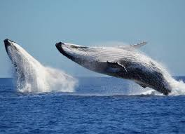
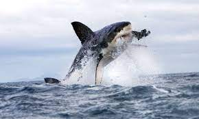

Water Animals are the animals that can live in water like the sailfish, the great shark and the blue whale those are examples of water animals. The fastest fish is the sailfish.
Their speed can reach 110 km per h.
The tallest water animal is the blue whale.
Did you know that the blue whale can be 33 meters long!
Also water animals are beautiful like Jellyfish, Starfish, Seahorse and the Blue Whale. Take care of the Jellyfish becuase, if you touched it, you will be hurted.
Did you know that the Blue Whale is the tallest animal on earth!
If you are swimming in the sea, just take care of the great shark.
It has more than 4,000 teeth.

